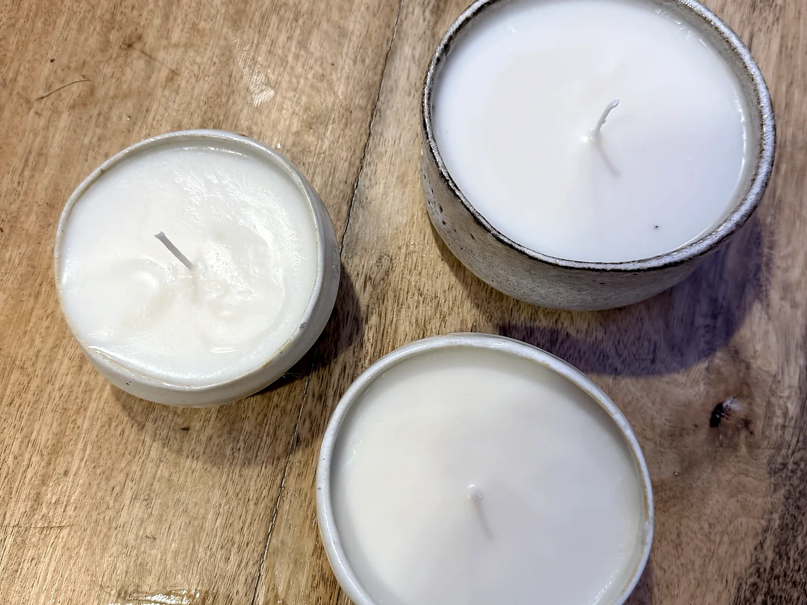

About the studio
Clay is soil, and it ends up on your table
I work alone, in Attica, Greece. Every piece that leaves this studio was made by my own two hands, from the first lump of clay to the last wipe of the foot. I have been doing this for about five years now.
It started with candles. I was pouring soy wax and wanted vessels of my own to pour it into, instead of whatever jars I could buy — so I went to learn to make them. The pots were meant to be containers for something else, and then the clay took over.
What drew me to ceramics and never let go is how ordinary the material is. Clay is earth — you dig it out of the ground — and you can turn it into a mug that somebody holds every single morning. Most of what I make is meant to be used like that: bowls, plates, cups that go in the dishwasher and come back out for the next meal. Some pieces are purely decorative, and those are welcome too, but the useful ones are where my heart is.
Because it is all made by hand, a second identical piece does not exist. I could throw the same shape tomorrow and the glaze would break differently in the fire. That is not a defect to apologise for — it is the reason to make things this way at all.

The process
How a mug gets made
Start to finish, a single piece takes about two weeks — most of which is spent waiting for clay to dry.
-
Wedging
Clay is kneaded to push out air pockets. A trapped bubble will blow a piece apart in the kiln.
-
Throwing
Centred on the wheel and pulled up into shape, then set aside to stiffen to leather-hard.
-
Trimming
Back on the wheel upside down to carve a foot ring, then handles are pulled and attached.
-
Bisque
A slow first firing to 1000°C turns fragile greenware into something that can take glaze.
-
Glazing
Dipped by hand, one end at a time. Drips are wiped back from the foot so nothing fuses to the kiln shelf.
-
Glaze firing
Up to 1200°C over twelve hours, then a full day to cool before the kiln can be opened.
Care & use
Living with handmade pottery
All of it is fired to stoneware temperature, so it's non-porous, food safe and tougher than it looks. A few things worth knowing:
- Dishwasher: fine, top or bottom rack. Nothing here has gold or lustre on it.
- Microwave: fine. The handle may get warm before the drink does.
- Oven: safe to 230°C, but avoid thermal shock — no fridge-to-oven moves.
- Unglazed foot: the base of each piece is bare clay, sanded smooth. On a soft surface it can still mark, so a coaster is a good idea on a finished table.
- Crazing: fine lines in the glaze are normal in some recipes and don't affect food safety.
Common questions
Will my piece look exactly like the photo?
Close, but not identical. Each item is made and glazed by hand, so size can vary by a few millimetres and glaze colour shifts between firings. If you need an exact match to something you already own, say so and we'll work from it.
Can you make something with words or a logo on it?
Yes, that's something I do — a logo, a name, a date or a line of your own, fired onto the clay. Get in touch and describe what you have in mind.
Can I visit the studio?
Yes, by appointment. It's a working space rather than a storefront, so get in touch first and we'll find a time.